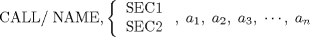
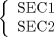

| Chapter 12. Special Programs in APT -- CALL | ||
|---|---|---|
 |  | |
| Chapter 12. Special Programs in APT -- CALL | ||
|---|---|---|
| | | |
Table of Contents
The APT language allows a part programmer to use special programs that embody programming techniques that are not available in the APT language. The special programs are not part of the APT system and been written by the user installation.
A special program can be called by the following APT statement:
where: 0 ≤ n ≤ 25
The APT word CALL informs the APT processor that a special program, together with the selector  is to be executed. The following meanings are attached to the parameters to the right of the slash:
NAME
The alphanumeric (up to six characters) label of the special program to be executed.
SEC1, SEC2
The APT vocabulary words that designate to the APT processor that the special program is to be executed in either the compiler phase or the arithmetic element phase of the APT processor, respectively.
The parameter values required to execute the special program. The maximum number of parameters allowed is 25. The parameters must be ordered exactly as the special program expects to find them.
| | | |
| 11.3. The READ Statement |  | 12.2. Call by Parameter Name and Value |